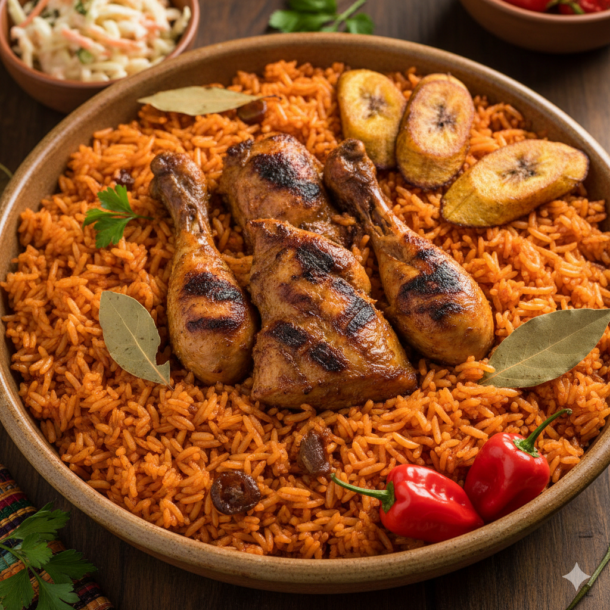

This is the quintessential West African Jollof Rice, known for its vibrant red color and deeply satisfying smoky flavor.
Long-grain parboiled rice is cooked in a rich, spicy tomato-and-pepper base until fluffy and tender.
Served traditionally with crispy Grilled Chicken (or protein of choice) and sweet Fried Plantains (Dodo),
it’s a celebratory and comforting dish beloved across the region.
Estimated preparation time
- Preparation Time: 20 minutes (chopping vegetables and blending)
- Cook Time: 45 - 60 minutes (sauce reduction and rice steaming)
- Total Active Time: Approximately 1 hour 20 minutes
Ingredients List
- Rice: 3 cups long-grain parboiled rice
- Tomatoes: 4-5 medium-sized ripe tomatoes, roughly chopped
- Scotch Bonnet Peppers (Ata Rodo): 1-2 (or more, to taste) – handle with care, they are spicy!
- Onions: 2 medium onions, 1 roughly chopped, 1 finely sliced
- Tomato Paste: 4-5 tablespoons
- Chicken or Beef Stock: 2-3 cups (or water + bouillon cubes)
- Vegetable Oil: ½ cup
- Curry Powder: 1 teaspoon
- Thyme: 1 teaspoon
- Bay Leaves: 2-3
- Salt: To taste
- Black Pepper: To taste
- Seasoning Cubes (optional): 2 (Maggi or Knorr)
Cooking Steps - 8 simples steps
- Prepare the Pepper Mix: In a blender, combine the chopped tomatoes, red bell peppers, scotch bonnet peppers, and one roughly chopped onion. Blend until smooth.
- Parboil the Rice (Optional but Recommended): Rinse the rice thoroughly. Bring a pot of water to a boil, add the rice, and cook for about 5-7 minutes until it's partially cooked but still hard.
Drain and set aside. This step helps achieve a fluffy, non-soggy Jollof. - Sauté Aromatics: Heat the vegetable oil in a large pot or Dutch oven over medium heat. Add the finely sliced onions and sauté until translucent and fragrant, about 3-5 minutes.
- Cook the Tomato Paste: Add the tomato paste to the pot and fry for about 5-7 minutes, stirring continuously, until it darkens slightly. This removes the raw tomato taste.
- Add the Pepper Mix: Pour the blended pepper mix into the pot. Stir well and bring to a simmer. Cook for about 15-20 minutes, stirring occasionally, until the sauce thickens and the oil starts to float to the top. This indicates the water has cooked out.
- Season the Sauce: Add the curry powder, thyme, bay leaves, salt, black pepper, and seasoning cubes (if using) to the sauce. Stir thoroughly and let it cook for another 5 minutes to allow the flavors to meld.
- Combine Rice and Sauce: Add the parboiled rice to the pot with the sauce. Pour in the chicken or beef stock (or water with bouillon cubes). The liquid should just cover the rice. Stir gently to combine everything.
- Cook the Jollof: Cover the pot tightly with a lid, preferably lined with foil or parchment paper to trap steam. Reduce the heat to low. Cook for 20-30 minutes, or until the rice is tender and all the liquid has been absorbed. Avoid stirring too much during this stage to prevent the rice from getting mushy.
- Achieve "Smoky" Flavor (Optional): Towards the end of the cooking time, you can increase the heat slightly for a few minutes without stirring. This helps create the beloved "bottom pot" or "smoky" effect. Be careful not to burn it!
- Rest and Serve: Once cooked, turn off the heat and let the Jollof rice rest, still covered, for another 10-15 minutes. This allows the steam to finish cooking the rice evenly. Fluff with a fork, stir in butter if desired, remove bay leaves, and serve hot with grilled chicken, fried plantain, or coleslaw.